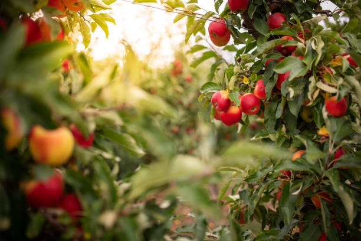
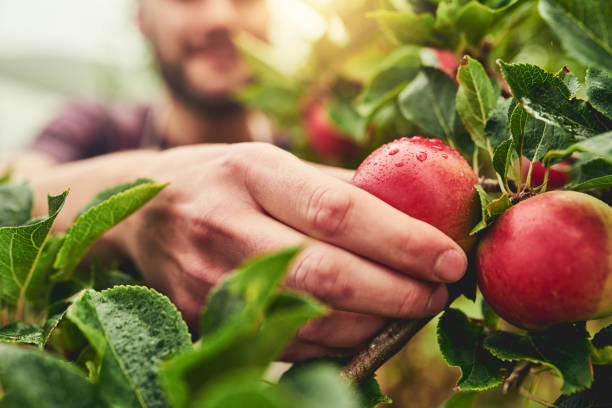
Apple trees typically require a temperate climate with cold winters, moderate summers, and a well-defined growing season. They are usually planted in late winter or early spring (February to April), depending on the region. The fruit matures and is harvested in late summer to fall (August to October).
Apple cultivation is prominent in states with suitable climates. In India, major apple-producing states include Himachal Pradesh, Jammu and Kashmir, and Uttarakhand. These states contribute significantly to the national apple production.
The highest market demand for apples is found in major metropolitan areas and urban centers across India, such as Delhi, Mumbai, and Bangalore, where the demand for fresh fruit is high.
Apples thrive best in well-drained, loamy soils rich in organic matter. The ideal soil pH for apple cultivation is between 6.0 and 7.0. Key soil requirements include:
Apple trees typically take 3-5 years to bear fruit after planting, depending on the variety and growing conditions.
سیب کے درختوں کو عام طور پر معتدل آب و ہوا کی ضرورت ہوتی ہے جس میں سرد سردیوں، اعتدال پسند گرمیاں، اور ایک اچھی طرح سے بڑھنے والے موسم کی ضرورت ہوتی ہے۔ وہ عام طور پر موسم سرما کے آخر یا موسم بہار کے شروع میں (فروری تا اپریل) علاقے کے لحاظ سے لگائے جاتے ہیں۔ پھل پک جاتا ہے اور موسم گرما کے آخر میں موسم خزاں (اگست سے اکتوبر) میں کاٹا جاتا ہے۔
سیب کی کاشت مناسب آب و ہوا والی ریاستوں میں نمایاں ہے۔ ہندوستان میں سیب پیدا کرنے والی بڑی ریاستوں میں ہماچل پردیش، جموں و کشمیر اور اتراکھنڈ شامل ہیں۔ یہ ریاستیں سیب کی قومی پیداوار میں نمایاں حصہ ڈالتی ہیں۔
سیب کی مارکیٹ میں سب سے زیادہ مانگ بڑے میٹروپولیٹن علاقوں اور ہندوستان کے شہری مراکز جیسے دہلی، ممبئی اور بنگلور میں پائی جاتی ہے، جہاں تازہ پھلوں کی مانگ زیادہ ہے۔
سیب نامیاتی مادے سے بھرپور اچھی طرح سے نکاسی والی، چکنی مٹی میں بہترین پھل پھولتے ہیں۔ سیب کی کاشت کے لیے مثالی مٹی کا پی ایچ 6.0 اور 7.0 کے درمیان ہے۔ کلیدی مٹی کی ضروریات میں شامل ہیں:
سیب کے درختوں کو پودے لگانے کے بعد پھل آنے میں عام طور پر 3-5 سال لگتے ہیں، مختلف قسم اور بڑھنے کے حالات پر منحصر ہے۔
2. SAFFRON / 2.زعفران
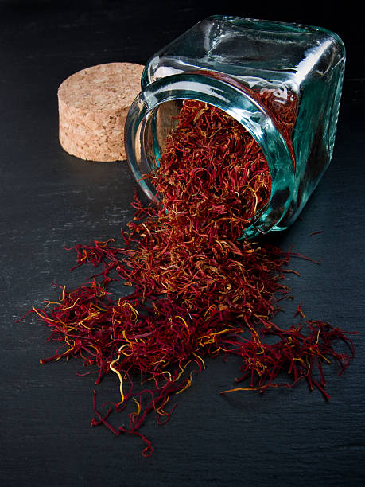
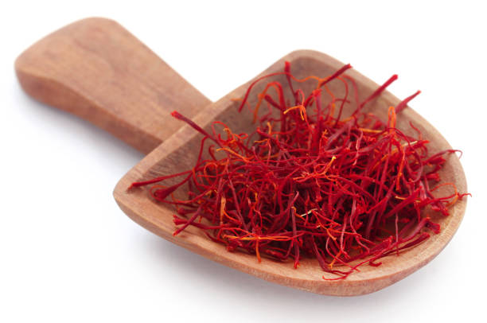
Saffron is planted in late summer and harvested in autumn, thriving in well-drained, sandy loam or clay loam soils with a pH of 6.0-8.0.In India, the major saffron-producing state is Jammu and Kashmir, particularly the Pampore region, which is known as the "Saffron Town of Kashmir."Saffron is sold extensively across India, with significant markets in states with large urban centers and high demand for premium spices, such as Maharashtra, Delhi, and Gujarat. Saffron corms bloom about 6-8 weeks after planting, requiring substantial investment in corms, land preparation, minimal irrigation, and significant labor for harvesting and processing.
زعفران کو موسم گرما کے آخر میں لگایا جاتا ہے اور موسم خزاں میں کاشت کیا جاتا ہے، اچھی طرح سے نکاسی والی، ریتیلی لوم یا چکنی لومڑی مٹی میں پھلتا پھولتا ہے جس کا پی ایچ 6.0-8.0 ہے۔ ہندوستان میں زعفران پیدا کرنے والی بڑی ریاست جموں و کشمیر ہے، خاص طور پر پامپور کا علاقہ، جسے "کشمیر کا زعفران ٹاؤن" کے نام سے جانا جاتا ہے۔ زعفران پورے ہندوستان میں بڑے پیمانے پر فروخت کیا جاتا ہے، جس میں بڑے شہری مراکز والی ریاستوں میں اہم بازار ہیں اور مہاراشٹر، دہلی اور گجرات جیسے پریمیم مصالحوں کی زیادہ مانگ ہے۔ زعفران کے دانے پودے لگانے کے تقریباً 6-8 ہفتوں بعد کھلتے ہیں، جس میں کورم میں خاطر خواہ سرمایہ کاری، زمین کی تیاری، کم سے کم آبپاشی، اور کٹائی اور پروسیسنگ کے لیے کافی محنت درکار ہوتی ہے۔
3. WALNUTS / 3.اخروٹ
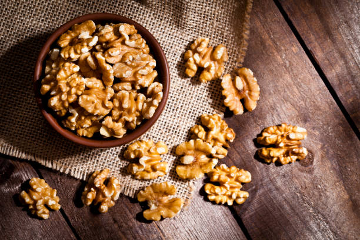
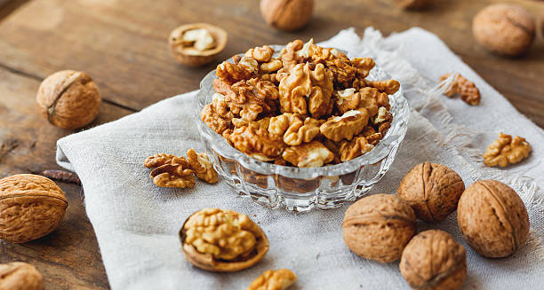
Walnuts are typically planted in late winter to early spring and harvested in late summer to early autumn. They prefer well-drained, fertile soils with a neutral to slightly acidic pH. Major walnut-producing states in India include Jammu and Kashmir, Himachal Pradesh, and Uttarakhand, with high market demand in states like Maharashtra, Delhi, Punjab, and Gujarat. Walnuts require several years to mature and start producing significant yields, with various resources needed for planting, irrigation, fertilization, pest control, pruning, and harvesting.
اخروٹ عام طور پر سردیوں کے آخر سے موسم بہار کے شروع میں لگائے جاتے ہیں اور گرمیوں کے آخر سے خزاں کے شروع میں کاٹے جاتے ہیں۔ وہ اچھی طرح سے نکاسی والی، زرخیز مٹی کو ترجیح دیتے ہیں جن میں غیر جانبدار سے قدرے تیزابیت والی pH ہوتی ہے۔ ہندوستان میں اخروٹ پیدا کرنے والی بڑی ریاستوں میں جموں اور کشمیر، ہماچل پردیش، اور اتراکھنڈ شامل ہیں، مہاراشٹر، دہلی، پنجاب اور گجرات جیسی ریاستوں میں مارکیٹ کی زیادہ مانگ ہے۔ اخروٹ کو پختہ ہونے اور اہم پیداوار شروع کرنے کے لیے کئی سال درکار ہوتے ہیں، جس میں پودے لگانے، آبپاشی، کھاد ڈالنے، کیڑوں پر قابو پانے، کٹائی اور کٹائی کے لیے مختلف وسائل درکار ہوتے ہیں۔
4. ALMONDS / 4.بادام
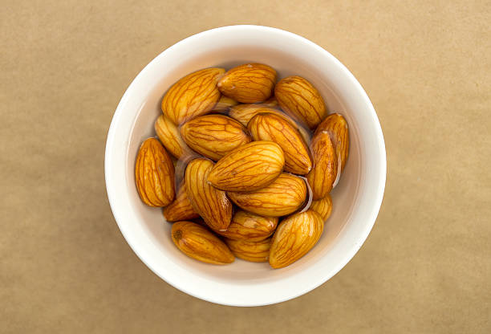
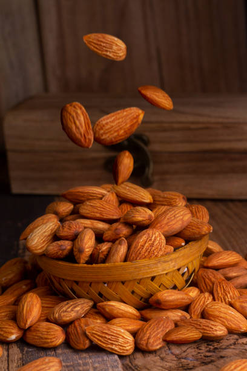
Almonds are typically planted in late winter to early spring and harvested in late summer to early autumn. They thrive in well-drained, fertile soils with a neutral to slightly alkaline pH. Major almond-producing states in India include Jammu and Kashmir, Himachal Pradesh, Uttarakhand, and Punjab, with high market demand in states like Maharashtra, Delhi, Punjab, Gujarat, and Karnataka. Almond trees take 3-5 years to start bearing fruit, requiring various resources for planting, irrigation, fertilization, pest control, pruning, and harvesting.
بادام عام طور پر سردیوں کے آخر سے موسم بہار کے شروع میں لگائے جاتے ہیں اور گرمیوں کے آخر سے خزاں کے شروع میں کاٹے جاتے ہیں۔ وہ اچھی طرح سے نکاسی والی، زرخیز زمینوں میں پروان چڑھتے ہیں جس میں غیر جانبدار سے قدرے الکلین پی ایچ ہوتا ہے۔ ہندوستان میں بادام پیدا کرنے والی بڑی ریاستوں میں جموں اور کشمیر، ہماچل پردیش، اتراکھنڈ اور پنجاب شامل ہیں، جن کی مارکیٹ میں مہاراشٹر، دہلی، پنجاب، گجرات اور کرناٹک جیسی ریاستوں میں زیادہ مانگ ہے۔ بادام کے درختوں کو پھل دینا شروع کرنے میں 3-5 سال لگتے ہیں، جس میں پودے لگانے، آبپاشی، کھاد ڈالنے، کیڑوں پر قابو پانے، کٹائی اور کٹائی کے لیے مختلف وسائل کی ضرورت ہوتی ہے۔
5. CABBAGE / 5.گوبھی
 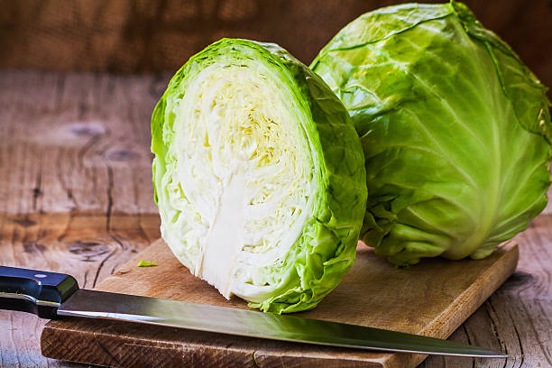
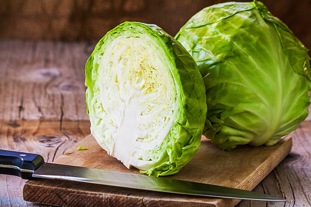
Cabbage is a cool-season crop planted in late winter or late summer, depending on the desired harvest season. It grows well in well-drained, fertile soils with a slightly acidic to neutral pH. Major cabbage-producing states include Punjab, Haryana, Uttar Pradesh, Maharashtra, Karnataka, and West Bengal, with significant market demand in states like Delhi, Maharashtra, West Bengal, Uttar Pradesh, and Karnataka. Cabbage cultivation requires resources such as high-quality seeds, land preparation, irrigation, fertilization, pest and disease management, and proper harvesting techniques for optimal yield and quality.
گوبھی ایک ٹھنڈے موسم کی فصل ہے جسے موسم سرما کے آخر یا موسم گرما کے آخر میں کاشت کیا جاتا ہے، یہ فصل کے مطلوبہ موسم پر منحصر ہے۔ یہ اچھی طرح سے نکاسی والی، زرخیز مٹی میں اچھی طرح اگتا ہے جس میں قدرے تیزابیت سے لے کر غیر جانبدار pH ہوتی ہے۔ گوبھی پیدا کرنے والی بڑی ریاستوں میں پنجاب، ہریانہ، اتر پردیش، مہاراشٹر، کرناٹک اور مغربی بنگال شامل ہیں، دہلی، مہاراشٹر، مغربی بنگال، اتر پردیش اور کرناٹک جیسی ریاستوں میں مارکیٹ کی اہم مانگ ہے۔ گوبھی کی کاشت کے لیے وسائل کی ضرورت ہوتی ہے جیسے کہ اعلیٰ معیار کے بیج، زمین کی تیاری، آبپاشی، کھاد ڈالنا، کیڑوں اور بیماریوں کا انتظام، اور بہترین پیداوار اور معیار کے لیے کٹائی کی مناسب تکنیک۔
6. CHERRIES / 6.چیری
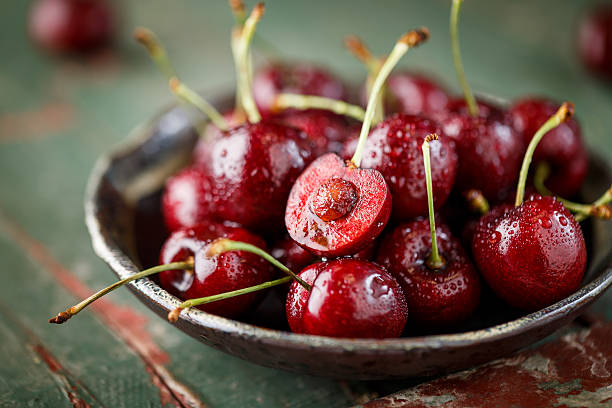
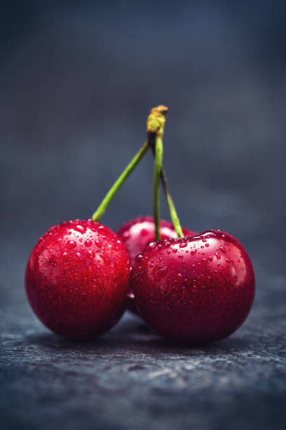
Cherries are typically planted in late fall to early spring and harvested in late spring to early summer. They prefer well-drained soils with good fertility and neutral to slightly acidic pH. Major cherry-producing states in India include Himachal Pradesh, Jammu and Kashmir, Uttarakhand, and Punjab, with high market demand in urban centers like Delhi, Mumbai, Bangalore, Chandigarh, and Pune. Cherry cultivation requires resources such as high-quality trees, land preparation, irrigation, fertilization, pest and disease management, pruning, and proper harvesting techniques for optimal yield and fruit quality.
چیری کو عام طور پر موسم خزاں کے آخر سے موسم بہار کے شروع میں لگایا جاتا ہے اور موسم بہار کے آخر سے موسم گرما کے شروع میں کاٹا جاتا ہے۔ وہ اچھی زرخیزی والی اچھی طرح سے نکاسی والی مٹی کو ترجیح دیتے ہیں اور قدرے تیزابیت والی pH سے غیر جانبدار۔ ہندوستان میں چیری پیدا کرنے والی بڑی ریاستوں میں ہماچل پردیش، جموں و کشمیر، اتراکھنڈ اور پنجاب شامل ہیں، جن کی دہلی، ممبئی، بنگلور، چندی گڑھ اور پونے جیسے شہری مراکز میں مارکیٹ کی زیادہ مانگ ہے۔ چیری کی کاشت کے لیے وسائل کی ضرورت ہوتی ہے جیسے کہ اعلیٰ قسم کے درخت، زمین کی تیاری، آبپاشی، کھاد ڈالنا، کیڑوں اور بیماریوں کا انتظام، کٹائی، اور زیادہ سے زیادہ پیداوار اور پھلوں کے معیار کے لیے کٹائی کی مناسب تکنیک۔
7. PULSES / 7.دالیں
 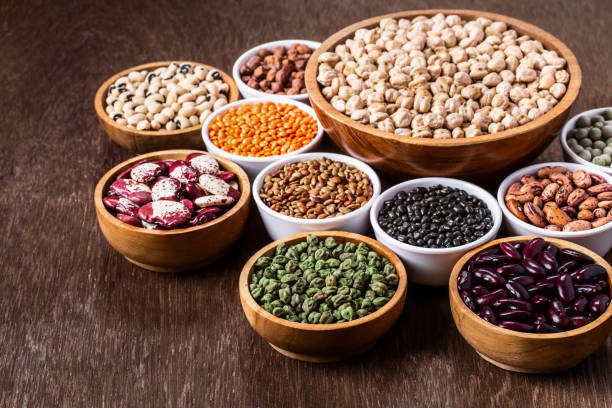
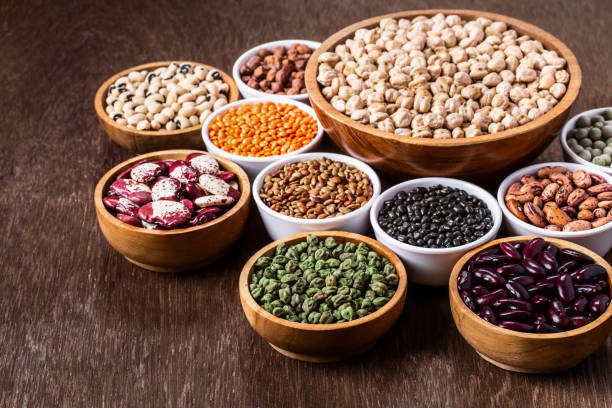
Sowing in June-July, harvesting in September-October. India is the largest producer and consumer of pulses.majorly in Madhya Pradesh (largest producer)Uttar Pradesh,Maharashtra,Rajasthan,Karnataka,Andhra Pradesh.
Well-drained loamy to sandy loam soils with good organic matter.ph range of 6.0-7.5.90-120 days depending on the type of pulse.Requires less water, but critical stages like flowering and pod development need adequate moisture.
جون جولائی میں بوائی، ستمبر اکتوبر میں کٹائی۔ بھارت دالوں کا سب سے بڑا پروڈیوسر اور صارف ہے۔ بنیادی طور پر مدھیہ پردیش (سب سے بڑا پروڈیوسر) اتر پردیش، مہاراشٹرا، راجستھان، کرناٹک، آندھرا پردیش۔
نبض کی قسم کے لحاظ سے 6.0-7.5.90-120 دن کی اچھی نامیاتی مادّہ کے ساتھ اچھی طرح سے نکاسی والی لومی سے لے کر ریتلی لومڑی والی زمین۔ کم پانی کی ضرورت ہوتی ہے، لیکن نازک مراحل جیسے پھول اور پھلی کی نشوونما کے لیے مناسب نمی کی ضرورت ہوتی ہے۔